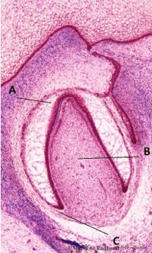

Los tumores odontogénicos son neoplasias que se desarrollan exclusivamente en los maxilares, originadas por proliferación del tejido epitelial, mesenquimal o de ambos, que conforman el órgano dental en la odontogénesis.
El germen dentario se organiza en tres zonas: Figura 1: Órgano del esmalte (A), la papila dentaria (B) y el saco dentario (C)
| Epitelial | Mesenquimal |
| Epitelio interno y externo del esmalte. De estos tejidos se desarrollan los tumores | Papila dental y el retículo estrellado. De estos tejidos se desarrollan los tumores odontogénicos |